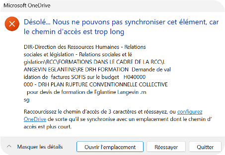
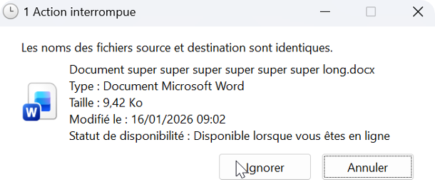

Spot files whose path is too long, fix them in a few clicks or share a detailed report with your teams.
Beyond 255 characters, the file syncs but Windows can no longer open it from File Explorer. Your teams don't understand why.
Beyond 400 characters, OneDrive stops syncing the file and displays an error as long as the path is too long.
Select your OneDrive folder to scan:
Find out how many files are a problem:
Shorten file paths from the application:
Try it free for 24 hours, then buy your license.
Business: want to deploy the tool on several workstations? Request a quote
Everything you need to know about the solution.
A question without an answer?
Contact us at support-pathchecker@osalydconsulting.com
Windows limits the length of a file's "path", meaning its name plus all the folders that contain it. When that length gets too long, two thresholds cause problems:
| Limit | Consequence |
|---|---|
| > 255 characters | ⚠️ Warning: the file syncs, but Windows cannot open it from File Explorer. It remains accessible online (OneDrive or Teams). |
| > 400 characters | 🔴 Critical: OneDrive cannot sync the file. |
Path > 400 characters: OneDrive displays a sync error and shows the number of excess characters. The file cannot be synced and OneDrive stays stuck on this error until the path length is corrected.

Path > 255 characters: the file syncs, but cannot be opened directly from the OneDrive folder. It remains accessible online or via Teams. OneDrive does not indicate the path length, making diagnosis difficult without a dedicated tool.

Windows does not always display path lengths.
Without a tool, you have to copy each path into a text editor to count the characters: an unrealistic task with thousands of files.
OneDrive Path Checker runs this diagnosis in seconds, before errors appear.